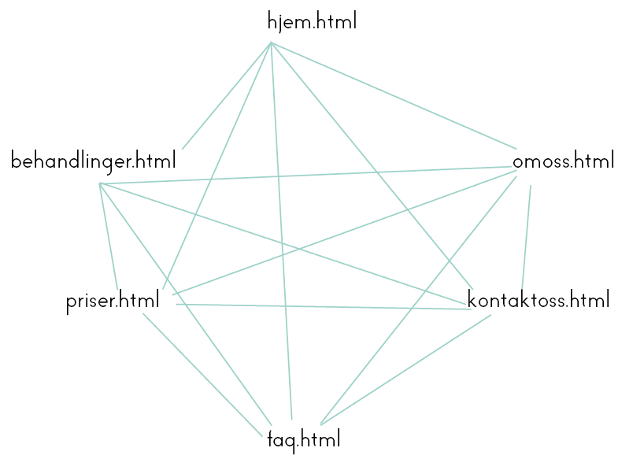
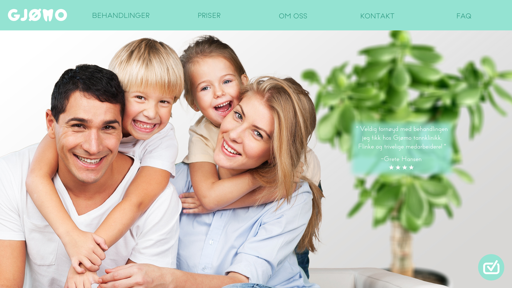
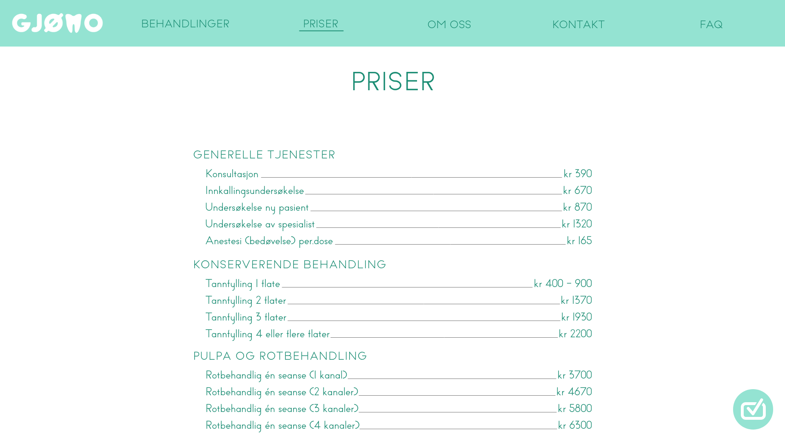
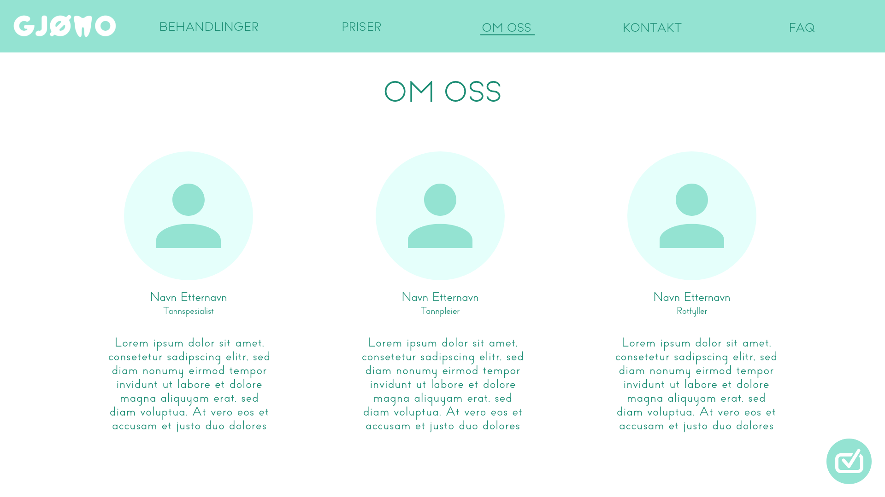
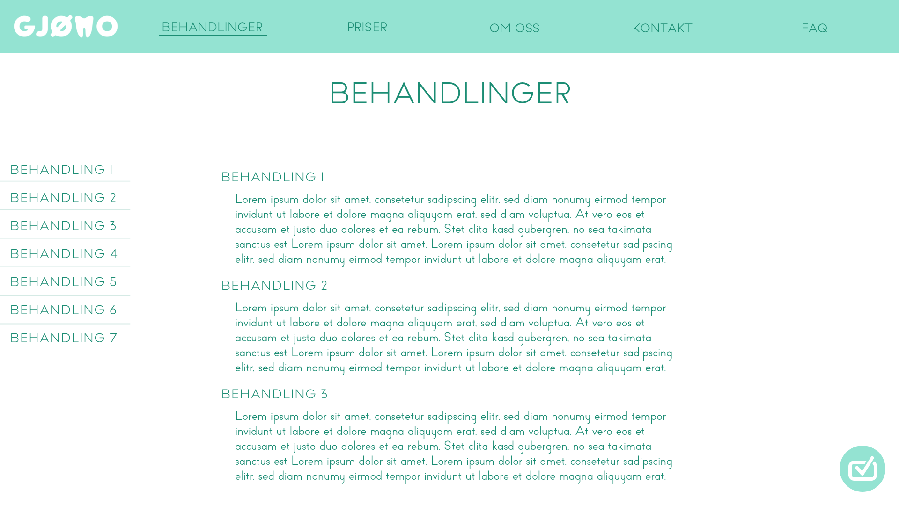
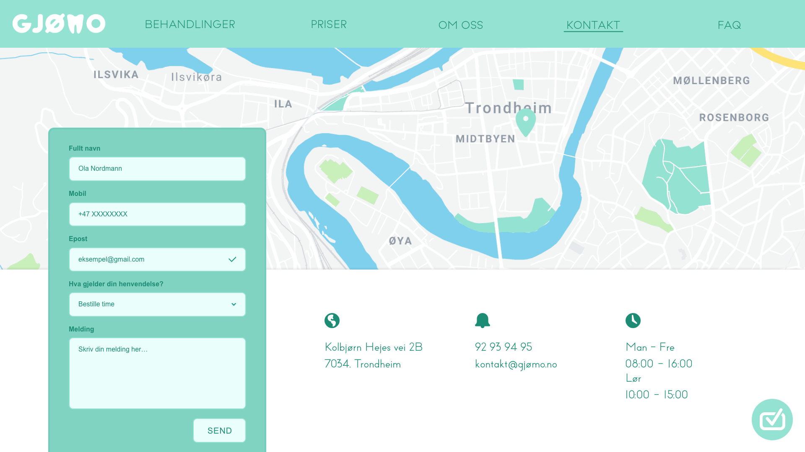
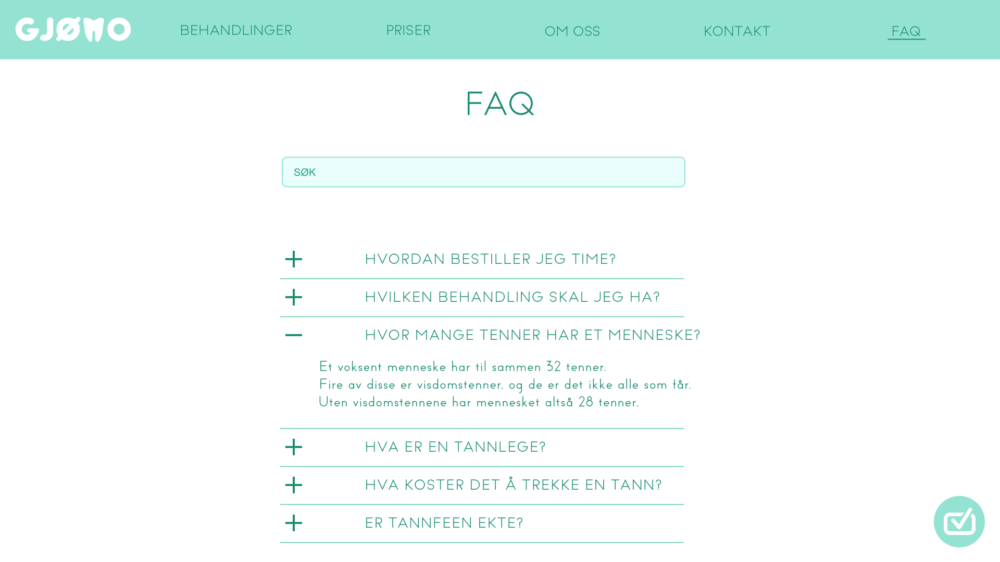
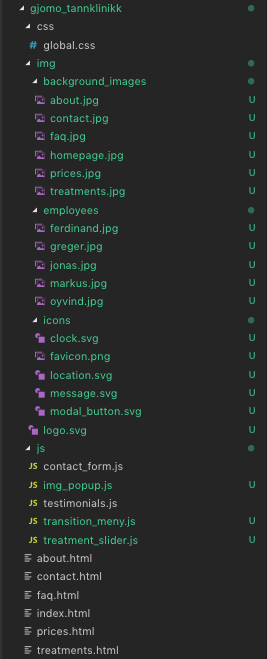

Markus, Greger, Øyvind, Jonas og Ferdinand
2. oktober 2019
Ola og Kari Nordmann ved GJØMO Tannklinikk, daglig ledere og eiere.
Med det teknologiske skiftet som stormet fremover på 2000-tallet, merket Ola og Kari en stor nedgang i nye kunder. Grunnen til dette var at stadig flere tannklinikker, startet å profilere seg på nett, noe som gjorde det enklere å finne og bestille time hos andre tannklinikker. «GJØMO Tannklinikk» har nå tatt kontakt med oss for å gi bedriften et nytt pust, der formålet er å gjøre dem mer synlig for alle som trenger tannlegebehandling. De ønsker økt synlighet og streber for å være det beste alternativet for dem som trenger behandling.
Nettsidens mål er å markedsføre bedriften «GJØMO Tannklinikk», ut mot potensielle kunder. Målet vårt er å gjøre det enkelt for folk med tannproblemer å komme i kontakt «GJØMO Tannklinikk».
Nettsidens målgruppe er hovedsakelig alle som har behov for tannbehandling; det være standard rutinesjekk, eller større spesialiserte inngrep.
Navigasjonsstrukturen på nettsiden vår har vi gjort til en ”klikk”, der alle sider på nettsiden kan nås fra alle sider. Linkene vil alltid være synlige og tilgjengelige. Det er kun under ”Behandliger” at en rollup-meny kommer, men man kommer til samme side, uansett hvilken behandling man trykker på, bare på forskjellig steder på siden. Vi har også lagt til en knapp for timesbestilling som hele tiden ligger nederst til høyre på siden. Siden vi har relativt få faner og linker, har vi valgt å lage navigasjonssystemet på denne måten, da vi føler dette er den mest effektive og brukervennlige måte å gjøre det på. Er man f.eks. inne på ”Behandlinger” kan man enkelt trykke seg over til ”Kontakt oss”, som er en naturlig handlingssekvens, uten å måtte lete gjennom skjulte menyer.
For the overall design of the website we focused on clearly conveying the information and features of each page, with the goal being that the site should feel professional, but also easy to understand for potential clients.
We have chosen a very simple and clean design, with only essential elements present at any given time. The site consists of 5 individual web pages, and the nav-bar features easy-to-read titles which take you to the respective page. These five pages should provide potential customers with all the information they need in order to choose GJØMO when deciding on a dental clinic. GJØMO requested that their logo should be featured on the site, so we decided to place it in the top left corner, inside the nav-bar. It also serves as a button which takes the user back to the home page.
The styling of the website which will apply to all pages is listed below:
Hjem-siden er det første møtet brukeren har med nettsiden. Øverst på siden vil det være et stort bilde som gir brukeren et førsteinntrykk av hva siden skal inneholde. Deretter, ved å scrolle nedover siden, vil det være informasjon om de ulike behandlingene klinikken tilbyr. Lengre ned på siden er det en enkel og kort oversikt over de ansatte med både bilde og stilling, før det nederst står en kort tekst om GJØMO Tannklinikk. For mye tekst kan ofte virke overveldende og rotete. Vi har derfor valgt å ha kun ett stort bilde øverst, som er det første brukeren ser, i håp om at det fanger brukerens oppmerksomhet. Øverst på siden er det en meny-bar som alltid er festet til toppen av skjermen. Dette er for at brukeren enkelt kan få ønsket informasjon uansett hvor på siden han måtte være. Ved bruk av javascript, vil det komme tilfeldige quotes med tilbakemeldinger fra tidligere kunder poppende opp til høyre på forsidebildet. Dette er for å skape en mer dynamisk nettside, samt å gi bruker en oversikt over positivt feedback fra andre kunder. Det vil konstant være et ikon nede til høyre på alle sidene. Dette er for umiddelbar timebestilling. Brukeren kan da lese om de forskjellige behandlingene, trykke på ikonet og det vil poppe frem et bestillingsskjema. Siden brukeren er på vil da fade ut i bakgrunnen, slik at bestillingsskjemaet er i hovedfokus.
 PriserHer vil bruker kunne få en enkel og ryddig oversikt over prisen til de ulike behandlingene. Dette for å gjøre kunden klar over pris fra starten og brukeren kan enkelt sammenligne med andre tannklinikker. For å skape en rød tråd og en helhet gjennom hele nettsiden med tanke på det grafiske, er layouten lik på de ulike siden. Øverst er overskriften «Priser», etterfulgt av underoverskrifter til hver behandling, med spesifikk pris under. På denne siden er prisinformasjonen hovedfokus, så designet er enkelt for å unngå unødvendig kaos.
 Om ossPå Om oss-siden vil brukeren kunne få en rask gjennomgang om hva GJØMO Tannklinikk er, hvem de er og hva de holder på med. Øverst på siden er det en kort tekst som forteller om bedriften. Ved å scrolle nedover vil brukeren finne en oversikt over alle de ansatte, hvor det er bilder av hver og en av dem, samt navn og spesialisering. Dette er for å skape en tidlig relasjon mellom bruker og tannleger, for å gjøre opplevelsen og helhetsinntrykket mer positiv for bruker.
 BehandlingerBruker vil på denne siden få mulighet til å se gjennom de vanligste behandlinger som tilbys. Det vil være et bilde til hver behandling og noe informasjon om behandlingen. På venstre kant på den siden vil det være en meny-bar, som lister opp behandlingene på siden, slik at det er lett å få oversikt over alle behandlinger og finne den bruker er interessert i. Formålet er at bruker skal få mulighet til å se nærmere på den behandling som er nødvendig for sitt tannproblem. Meny-baren innføres for at det skal være oversiktlig å finne behandlingen en ønsker å vite mer om. Bildene gir nettsiden et mer dynamisk preg, og åpner for visuell interaksjon med bruker.
 KontaktHer vil brukeren finne alt av kontaktinfo til GJØMO, sosiale profiler og åpningstider etc. Det skal også være mulig å sende inn en timebestillingsforespørsel ved å benytte skjema. I skjemaet må navn, e-post, telefonnummer og beskrivelse av nødvendig hjelp fylles ut, før brukeren har mulighet til å sende dette inn til GJØMO. Øverst på siden vil kart med merket lokasjon til bedriften vises. Bruk av kart, som bilde gjør det tydelig for bruker hvor GJØMO holder til, og kontaktinfo er en elementær nødvendighet for at brukeren skal kunne komme i kontakt med bedriften. Skjemaet skal bidra til en enkel prosess for bruker, til å kunne få avtalt time hos tannlegen. Unikt for siden vil være kartet som vises i bakgrunnen og skjemaet.
 FAQPå denne siden vil brukeren få mulighet til å bla gjennom en liste med “ofte stilte spørsmål”. Ved å trykke på spørsmålet, vil det komme opp en utvidet boks med svar på spørsmålet. Det vil også være mulig å benytte en søkefunksjon. Målet med siden, er å kunne besvare spørsmål som pasienten skulle ha. Det er ofte flere spørsmål knyttet opp med behandling, som kan være tilfredsstillende for bruker å få svar på. Designløsningen med at spørsmålene først vises i bokser, med mulighet for utvidelse, gjør at spørsmålene på siden kommer ryddigere frem. Når du trykker inn på et spørsmål, utvider boksen seg til å inkludere svaret. Kun et svar vil vises om gangen, så ved trykk fra et spørsmål til et annet, vil det forrige svaret lukkes. Dette gir bedre struktur, leselighet og orientering for bruker.
Vi har valgt å legge planlegging av våre oppgaver i Trello (Vår plan ligger her). Her har vi muligheten til å delegere oppgaver til de ulike medlemmer på gruppen samt sette en deadline for når oppgavene skal være fullført. Hver oppgave har en grundig beskrivelse for hva som skal gjøres slik at det ikke blir noen misforståelser blant gruppemedlemmene.
Tavlene i Trello er organisert etter globale elementer, design og alle undersidene med hver av deres elementer. Vi har lagt til etiketter på hver oppgave for at vi kan klart å tydelig se hva som er ferdig og hva som skal gjøres videre. På denne måten så vet vi akkurat hvilke oppgaver som er påbegynt og hvilke som er ferdig.
Videre har vi valgt å bruke gitHub for å dele og samarbeide på koden med hverandre. Hele sidestrukturen ligger der slik at vi alle kan være oppdatert på hvilke filer som trengs (Du kan følge framgangen her). Den tentative mappestrukturen er allerede lastet opp og ser slik ut:
Vi har også en felles Google Drive mappe til større dokumenter og annen skriftlig planlegging. Denne brukes også til samarbeid på innleveringsoppgavene slik at vi kan jobbe i samme dokument samtidig.